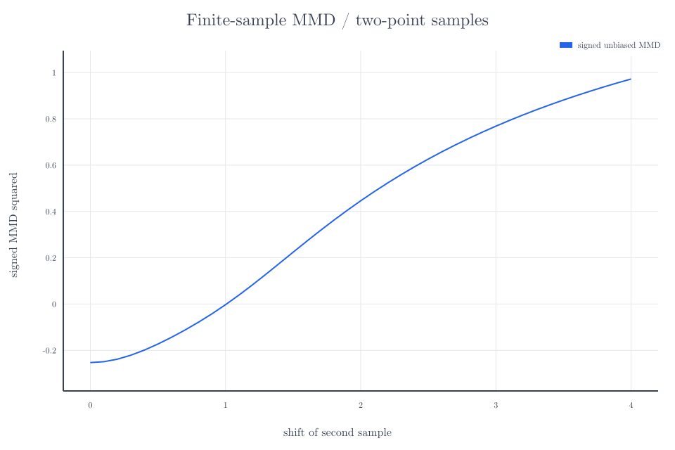
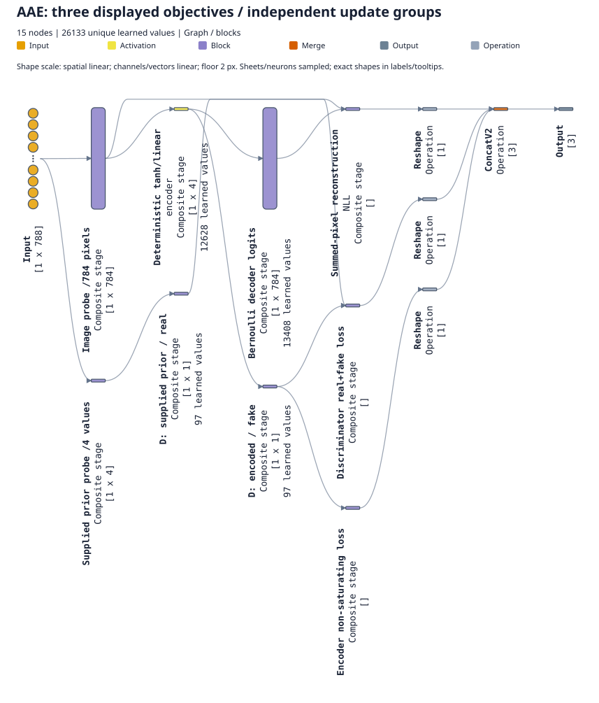
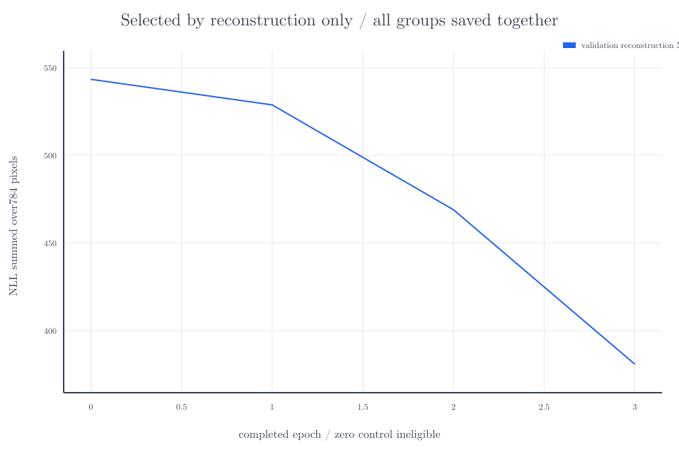
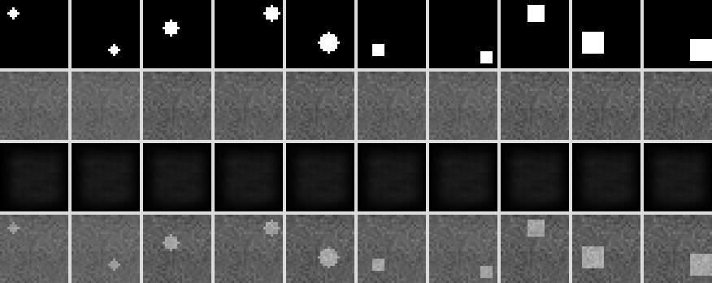
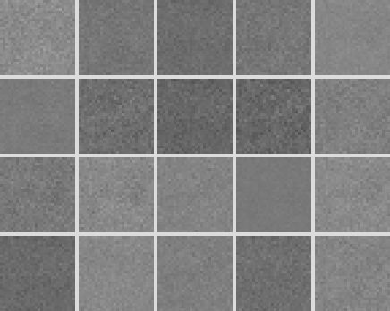

Adversarial Autoencoders: Deterministic Codes and an Aggregate Prior
Abstract
An adversarial autoencoder learns to reconstruct observations while asking a latent discriminator to distinguish encoded data from a supplied prior. This report separates deterministic encoding, Bernoulli reconstruction and aggregate-prior adversarial objectives, then executes the original small tanh model on an exhaustive294-image circle/square lattice. Its three parameter groups use four independent Adam states, with encoder/decoder reconstruction gradients computed before either group is changed. After21 minibatches and84 optimizer updates, validation selects epoch3; test pixel MSE0.14893 is worse than the fitting-only mean0.04855. All weak reconstructions and unfiltered prior-decoder probabilities remain visible. Finite adversarial losses do not certify aggregate matching, disentanglement, an ELBO or useful generation.
Three networks and three different objectives
[Makhzani, Shlens, Jaitly, Goodfellow and Frey](https://arxiv.org/abs/1511.05644) introduce adversarial matching of an autoencoder's aggregated code distribution to a chosen prior. This report retains the migrated deterministic teaching configuration: E:784–16tanh–4linear, G:4–16tanh–784linear logits, D:4–16tanh–1linear logit. Sigmoid decoder values are Bernoulli probabilities; there is no posterior mean/variance pair, posterior epsilon or per-example Gaussian KL. Prior draws are real discriminator examples and never enter E or G reconstruction.
For image rows X, supplied prior rows U, code Z=E(X), logits L=G(Z) and discriminator logits s_r=D(U),s_f=D(Z), the three losses are
The E adversarial term is non-saturating: it minimizes a real-label loss rather than maximizing D's fake-label loss. The core returns all mathematical paths without implicit detaches; the caller chooses which parameter group receives an update. Encoder gradients of D loss can exist mathematically even though the discriminator phase updates only D.
#include <dm/dm.hpp>
int main() {
std::filesystem::create_directories("build");
dm::graphics::Diagram d(54, 1150);
d.node("x", {0, 0}, "Binary image X\n784 pixels")
.node("e", {6, 0}, "Deterministic encoder E\n784 →16 tanh →4 linear")
.node("g", {12, 0}, "Bernoulli decoder G\n4 →16 tanh →784 logits")
.node("r", {12, -3}, "Reconstruction NLL\nOne shared E+G gradient snapshot")
.node("u", {0, -4}, "Explicit N(0,I) prior U\nReal discriminator examples")
.node("d", {6, -4}, "Latent discriminator D\nPrior=real / encoded=fake")
.node("a", {6, -7}, "Encoder adversarial objective\nEncoded should receive real label")
.node("o", {12, -7}, "Four independent Adam states\nE reconstruction / G / D / E adversarial")
.edge("x", "e")
.edge("e", "g")
.edge("g", "r")
.edge("x", "r")
.edge("e", "d")
.edge("u", "d")
.edge("d", "a")
.edge("r", "o")
.edge("d", "o")
.edge("a", "o")
.save_svg("build/aae_method.svg");
}
Hand losses at zero logits
At three zero pixel logits, any binary target row has reconstruction NLL3log2≈2.07944. For target[1,0,1], the logit derivative is[−0.5,0.5,−0.5]. At zero discriminator logits, L_D=2log2 and L_E,adv=log2. D wants real logits to increase and fake logits to decrease; E's adversarial step wants fake logits to increase instead. Stable softplus avoids computing log(sigmoid) after a probability has rounded to0 or1.
#include <dm/dm.hpp>
int main() {
namespace n = dm::nn;
const auto type = n::DType::Float64;
const auto logits = n::zeros({1, 3}, type).requires_grad_(),
target = n::tensor({1., 0., 1.}, {1, 3}, type);
const auto loss = n::models::BernoulliPixelNll(logits, target);
const auto derivative = n::grad(n::sum(loss), {logits})[0];
if (std::abs(loss.item() - 3 * std::log(2.)) > 1e-14 ||
n::max(n::abs(derivative - n::tensor({-.5, .5, -.5}, {1, 3}, type))).item() > 1e-14)
return 1;
auto real = n::zeros({1, 1}, type).requires_grad_(),
fake = n::zeros({1, 1}, type).requires_grad_();
const auto dl = n::mean(n::softplus(-real)) + n::mean(n::softplus(fake));
const auto dg = n::grad(dl, {real, fake});
const auto el = n::mean(n::softplus(-fake));
const auto eg = n::grad(el, {fake})[0];
if (std::abs(dl.item() - 2 * std::log(2.)) > 1e-14 || dg[0].item() != -.5 || dg[1].item() != .5 ||
eg.item() != -.5)
return 1;
std::print(
"Pixel NLL {:.9f}, pixel partials {}. D loss {:.9f}, E adversarial {:.9f}.\n",
loss.item(),
derivative.values_str(),
dl.item(),
el.item());
std::vector<double> x, prior, fake_loss;
for (int i = 0; i <= 80; ++i) {
double v = -4 + i * .1;
x.push_back(v);
prior.push_back(std::log1p(std::exp(-v)));
fake_loss.push_back(std::log1p(std::exp(v)));
}
auto plot = dm::graphics::RPlot::create();
plot.lines(x, prior, "real label / E adversarial", {37, 99, 235}, 2)
.lines(x, fake_loss, "fake label / D encoded", {220, 38, 38}, 2)
.x_label("discriminator logit")
.y_label("single-example softplus loss")
.title("D and E adversarial updates request opposite encoded labels")
.save_svg("build/aae_losses.svg");
}Pixel NLL 2.079441542, pixel partials [[-0.5, 0.5, -0.5]]. D loss 1.386294361, E adversarial 0.693147181.

For decoder probability R=σ(L), the reconstruction logit derivative is(R−X)/B: pixels are summed, not averaged. D's prior derivative is(σ(s_r)−1)/P, its encoded derivative isσ(s_f)/B, and E's adversarial encoded derivative is(σ(s_f)−1)/B. Tanh contributes1−h² at each hidden layer. These signs and normalizations are preserved; changing to per-pixel mean would rescale reconstruction gradients by784 and alter the source trajectory.
At an ideal population discriminator with compatible densities p(prior),q(encoded), D*(z)=p(z)/(p(z)+q(z)) and the minimized discriminator loss is2log2−2JS(p||q). That identity assumes an optimized discriminator with sufficient capacity. Here D is finite, training is short, and deterministic codes of210 training observations form a finite empirical support whereas a Gaussian is continuous. Exact equality of those two empirical/population measures is impossible; a loss near2log2 from this small trained D cannot certify matching. No per-example variational KL, exact marginal likelihood or ELBO is computed.
Executed graph and independent parameter census
The graph collects the three scalar objectives for display; fitting uses their separate phases, not the sum of this display vector. It includes the supplied prior branch and both uses of the same discriminator. For tracing only, a788-value input packs one784-pixel image and one four-value zero prior row, then splits them into explicitly labelled boundaries. The API and fitting loop still take separate image and prior tensors. The encoder owns12,628 scalars, decoder13,408 and discriminator97:26,133 across12 leaves.
#include <dm/dm.hpp>
int main() {
namespace n = dm::nn;
n::ParameterStore e(3501), g(3511), d(3527);
n::Module model(
[&](const n::Tensor& packed) {
const auto x = n::slice_axis(packed, 1, 0, 784), prior = n::slice_axis(packed, 1, 784, 788);
n::model_stage("Image probe /784 pixels", packed, x);
n::model_stage("Supplied prior probe /4 values", packed, prior);
auto o = n::models::AdversarialAutoencoder(e, g, d, x, prior);
n::model_stage("Deterministic tanh/linear encoder", x, o.code);
n::model_stage("Bernoulli decoder logits", o.code, o.logits);
n::model_stage("D: supplied prior / real", prior, o.prior_logit);
n::model_stage("D: encoded / fake", o.code, o.encoded_logit);
n::model_stage(
"Summed-pixel reconstruction NLL",
std::vector<n::Tensor>{x, o.logits},
o.reconstruction_loss);
n::model_stage(
"Discriminator real+fake loss",
std::vector<n::Tensor>{o.prior_logit, o.encoded_logit},
o.discriminator_loss);
n::model_stage("Encoder non-saturating loss", o.encoded_logit, o.adversarial_loss);
return n::stack({o.reconstruction_loss, o.discriminator_loss, o.adversarial_loss}, 0);
},
"AAE: three displayed objectives / independent update groups");
n::ModelPlotOptions options;
options.style = n::ModelPlotStyle::Graph;
options.detail = n::ModelPlotDetail::Blocks;
options.max_neurons = 8;
options.sizing.spatial_scale = n::ModelPlotScale::Linear;
options.sizing.channel_scale = n::ModelPlotScale::Linear;
options.sizing.minimum_extent = 2;
options.sizing.max_planes = 6;
const auto figure = model.plot(n::zeros({1, 788}), options);
if (e.count() != 12628 || g.count() != 13408 || d.count() != 97 ||
figure.parameter_count() != 26133)
return 1;
figure.save_svg("build/aae_architecture.svg");
std::print(
"| group | tensors | scalars |\n|---|---:|---:|\n| E | {} | {} |\n| G | {} | {} |\n| D | {} "
"| {} |\n",
e.size(),
e.count(),
g.size(),
g.count(),
d.size(),
d.count());
}| group | tensors | scalars |
|---|---|---|
| E | 4 | 12628 |
| G | 4 | 13408 |
| D | 4 | 97 |

The original known-factor lattice, prepared natively
This dataset is a local procedural teaching fixture, not a downloaded image benchmark. It exhausts2 shapes(circle/square),3 sizes,7 horizontal positions and7 vertical positions. Radius is size+2 and centre=(3x+5,3y+5) in28×28 pixels, with inclusive boundaries. Source ID is (((shape×3+size)×7+x)×7+y). Residue(x+2y+size+3shape) mod7 assigns test0, validation1 and fitting2–6, producing210/42/42 unique binary images, with each factor balanced in every split. Rows retain ascending source IDs. Split-specific combinations are held out; this is not a random IID split. The original loader independently regenerates all230,496 pixels and checks all source IDs, factors, uniqueness, split residues and marginal balance.
#include <dm/dm.hpp>
int main() {
namespace n = dm::nn;
std::filesystem::create_directories("build");
const std::filesystem::path cache = dm::datasets::data_home();
dm::datasets::prepare_example_data("beta-vae-assets", cache.string());
auto arrays = n::load_npz((cache / "beta_vae/factors.npz").string());
for (auto& [name, value] : arrays)
if (name.ends_with("_images"))
value = n::cast(value, n::DType::Float32);
n::save_npz("build/aae_data.npz", arrays);
std::filesystem::copy_file(
cache / "beta_vae/manifest.json",
"build/aae_data_manifest.json",
std::filesystem::copy_options::overwrite_existing);
std::print("| split | observations | pixel geometry |\n|---|---:|---|\n");
for (const auto& [name, value] : arrays)
if (name.ends_with("_images"))
std::print("| {} | {} | 28 ×28 ×1 |\n", name, value.size(0));
}| split | observations | pixel geometry |
|---|---|---|
| fit_images | 210 | 28 ×28 ×1 |
| validation_images | 42 | 28 ×28 ×1 |
| test_images | 42 | 28 ×28 ×1 |
Twenty-one minibatches, three phases and four optimizer states
Groups E/G/D use seeds3501/3511/3527 and independent Glorot weights/zero biases. Each epoch visits all210 fitting images using batch32, final batch18 and order seed3581:seven minibatches, three epochs,21 steps per optimizer and84 optimizer updates total. Four Adam states all use learning rate.003,β1=.9,β2=.999,ε=1e-8; the two encoder optimizers share leaves but not moments. Fixed prior banks use seeds3541/3547/3553 for fit/validation/test and3571 for20 generations. Training prior banks are freshly generated with seeds3594/3595/3596. They use the canonical explicit MT19937/Box–Muller Float64 stream, narrowed to Float32 for model inputs.
For each batch, reconstruction gradients for E and G are computed together from one forward snapshot before either update. D then uses a newly computed forward pass and only D is updated. E adversarial then recomputes after D's update and only E is updated, using its separate state. The first-batch initial versus actual phase gradients and all phase snapshots are saved. Each completed epoch saves all three groups; full validation *reconstruction NLL* selects the checkpoint, not D/adversarial loss or test pixels. Epoch zero is saved as a control and is ineligible.
#include <dm/dm.hpp>
int main() {
namespace n = dm::nn;
std::map<std::string, n::Tensor> data;
for (const auto& [key, value] : n::load_npz("build/aae_data.npz"))
data.emplace(key, value);
n::NamedTensors bank;
std::vector<n::Tensor> priors;
for (int k = 0; k < 4; ++k) {
const std::string split = k == 0 ? "fit"
: k == 1 ? "validation"
: k == 2 ? "test"
: "generation";
int count = k == 0 ? 210 : k == 3 ? 20 : 42;
unsigned seed = k == 3 ? 3571 : 3541 + k * 6;
const auto standard = n::models::GaussianNoise({count, 4}, 1, seed),
epsilon = n::cast(standard, n::DType::Float32);
bank.emplace_back(split + "_standard", standard);
bank.emplace_back(split + "_epsilon", epsilon);
priors.push_back(n::select(epsilon, 0, 0).contiguous());
}
n::save_npz("build/aae_fixed_noise.npz", bank);
n::ParameterStore e(3501), g(3511), d(3527);
std::vector<n::ParameterStore*> stores{&e, &g, &d}, groups{&e, &g, &d, &e};
{
n::NoGradGuard guard;
n::models::AdversarialAutoencoder(e, g, d, n::zeros({1, 784}), n::zeros({1, 4}));
}
auto arrays = [&]() {
n::NamedTensors out;
for (int k = 0; k < 3; ++k)
for (const auto& name : stores[k]->names())
out.emplace_back(std::to_string(k) + "/" + name, stores[k]->at(name).detach().clone());
return out;
};
auto fields = [](const n::models::AaeOutput& o) {
return n::NamedTensors{
{"code", o.code},
{"logits", o.logits},
{"probability", o.probability},
{"prior_logit", o.prior_logit},
{"encoded_logit", o.encoded_logit},
{"nll", o.nll},
{"reconstruction_loss", o.reconstruction_loss},
{"discriminator_loss", o.discriminator_loss},
{"adversarial_loss", o.adversarial_loss}};
};
auto named = [](int group, const std::vector<n::Tensor>& gradients, n::ParameterStore& p) {
n::NamedTensors out;
for (std::size_t i = 0; i < gradients.size(); ++i)
out.emplace_back(std::to_string(group == 3 ? 0 : group) + "/" + p.names()[i], gradients[i]);
return out;
};
n::OptimizerConfig config;
config.kind = n::OptimizerKind::Adam;
config.beta1 = .9;
config.beta2 = .999;
config.epsilon = 1e-8;
std::vector<std::unique_ptr<n::Optimizer>> optimizers;
for (auto* group : groups)
optimizers.push_back(std::make_unique<n::Optimizer>(*group, .003, config));
n::save_npz("build/aae_initial_arrays.npz", arrays());
n::BatchOrder order(210, 32, 3581);
const auto fit = data.at("fit_images"),
validation = data.at("validation_images").reshape({42, 784});
const auto source = data.at("fit_source_ids").to_vector<int>();
std::ofstream batches("build/aae_batches.tsv");
batches << "epoch\tstep\trow\tsource_id\n";
std::vector<double> epochs, nll_path, d_path, adv_path;
double best = std::numeric_limits<double>::infinity();
int selected = 0, steps = 0;
std::print(
"| epoch | validation summed-pixel NLL | D loss | E adversarial loss | eligible "
"|\n|---:|---:|---:|---:|---|\n");
{
n::NoGradGuard guard;
const auto o = n::models::AdversarialAutoencoder(e, g, d, validation, priors[1]);
n::save_npz("build/aae_epoch0_validation.npz", fields(o));
epochs.push_back(0);
nll_path.push_back(o.reconstruction_loss.item());
d_path.push_back(o.discriminator_loss.item());
adv_path.push_back(o.adversarial_loss.item());
std::print(
"| 0 | {:.9f} | {:.9f} | {:.9f} | no |\n", nll_path.back(), d_path.back(), adv_path.back());
}
for (int epoch = 1; epoch <= 3; ++epoch) {
const auto standard = n::models::GaussianNoise({210, 4}, 1, 3593 + epoch),
epsilon = n::cast(standard, n::DType::Float32);
const auto prior = n::select(epsilon, 0, 0).contiguous();
n::save_npz(
"build/aae_train_noise_epoch" + std::to_string(epoch) + ".npz",
{{"standard", standard}, {"epsilon", epsilon}});
order.begin_epoch();
int seen = 0;
for (;;) {
const auto rows = order.next();
if (rows.empty())
break;
const auto images = n::take_rows(fit, rows), x = images.reshape({images.size(0), 784}),
p = n::take_rows(prior, rows);
if (steps == 0) {
n::save_npz("build/aae_first_batch.npz", {{"images", images}, {"prior", p}});
{
n::NoGradGuard guard;
n::save_npz(
"build/aae_first_forward.npz",
fields(n::models::AdversarialAutoencoder(e, g, d, x, p)));
}
for (int k = 0; k < 4; ++k) {
const auto o = n::models::AdversarialAutoencoder(e, g, d, x, p);
const auto loss = k < 2 ? o.reconstruction_loss
: k == 2 ? o.discriminator_loss
: o.adversarial_loss;
const auto gradients = n::grad(loss, groups[k]->parameters());
n::save_npz(
"build/aae_initial_gradients_group" + std::to_string(k) + ".npz",
named(k, gradients, *groups[k]));
}
}
for (int phase = 0; phase < 3; ++phase) {
const auto before = steps == 0 ? arrays() : n::NamedTensors{};
const auto o = n::models::AdversarialAutoencoder(e, g, d, x, p);
if (phase == 0) {
auto variables = e.parameters();
const auto gv = g.parameters();
variables.insert(variables.end(), gv.begin(), gv.end());
const auto gradients = n::grad(o.reconstruction_loss, variables);
const std::vector<n::Tensor> ge(gradients.begin(), gradients.begin() + e.size()),
gg(gradients.begin() + e.size(), gradients.end());
if (steps == 0) {
n::save_npz("build/aae_first_actual_gradients_group0.npz", named(0, ge, e));
n::save_npz("build/aae_first_actual_gradients_group1.npz", named(1, gg, g));
}
optimizers[0]->step(ge);
optimizers[1]->step(gg); // both gradients already computed
} else {
const int k = phase == 1 ? 2 : 3;
const auto loss = phase == 1 ? o.discriminator_loss : o.adversarial_loss;
const auto gradients = n::grad(loss, groups[k]->parameters());
if (steps == 0)
n::save_npz(
"build/aae_first_actual_gradients_group" + std::to_string(k) + ".npz",
named(k, gradients, *groups[k]));
optimizers[k]->step(gradients);
}
if (steps == 0) {
const auto after = arrays();
bool changed = false;
for (const auto& [key, value] : before) {
const bool intended = phase == 0 ? key[0] != '2'
: phase == 1 ? key[0] == '2'
: key[0] == '0';
const auto found = std::find_if(
after.begin(), after.end(), [&](const auto& entry) { return entry.first == key; });
if (found == after.end())
return 1;
if (intended)
changed |= !n::equal_bits(value, found->second);
else if (!n::equal_bits(value, found->second))
return 1;
}
if (!changed)
return 1;
n::save_npz("build/aae_first_after_phase" + std::to_string(phase) + ".npz", after);
}
}
for (auto row : rows)
batches << epoch << '\t' << steps << '\t' << row << '\t' << source[row] << '\n';
++steps;
seen += int(rows.size());
}
if (seen != 210)
return 1;
n::NoGradGuard guard;
const auto o = n::models::AdversarialAutoencoder(e, g, d, validation, priors[1]);
const double score = o.reconstruction_loss.item();
n::save_npz("build/aae_epoch" + std::to_string(epoch) + "_arrays.npz", arrays());
n::save_npz("build/aae_epoch" + std::to_string(epoch) + "_validation.npz", fields(o));
if (score < best) {
best = score;
selected = epoch;
n::save_npz("build/aae_best.npz", arrays());
}
epochs.push_back(epoch);
nll_path.push_back(score);
d_path.push_back(o.discriminator_loss.item());
adv_path.push_back(o.adversarial_loss.item());
std::print(
"| {} | {:.9f} | {:.9f} | {:.9f} | yes |\n", epoch, score, d_path.back(), adv_path.back());
}
if (steps != 21 || !batches)
return 1;
for (const auto& optimizer : optimizers)
if (optimizer->iterations() != 21)
return 1;
n::save_npz(
"build/aae_selection.npz",
{{"epoch", n::full({}, selected, n::DType::Int32)},
{"nll", n::from_vector(nll_path, {4})},
{"D", n::from_vector(d_path, {4})},
{"E_adv", n::from_vector(adv_path, {4})}});
auto plot = dm::graphics::RPlot::create();
plot.lines(epochs, nll_path, "validation reconstruction NLL", {37, 99, 235}, 2)
.x_label("completed epoch / zero control ineligible")
.y_label("NLL summed over784 pixels")
.title("Selected by reconstruction only / all groups saved together")
.save_svg("build/aae_learning.svg");
std::print("Selected epoch{};21 steps per optimizer,84 updates total.\n", selected);
}| epoch | validation summed-pixel NLL | D loss | E adversarial loss | eligible |
|---|---|---|---|---|
| 0 | 543.431335449 | 1.288275719 | 0.769089758 | no |
| 1 | 528.852172852 | 1.467409492 | 0.595996082 | yes |
| 2 | 469.044128418 | 1.454582095 | 0.599802792 | yes |
| 3 | 380.985290527 | 1.379942894 | 0.658292115 | yes |
Selected epoch3;21 steps per optimizer,84 updates total.

Fresh restoration and prior-independent reconstruction
All12 selected arrays are loaded into new stores after checking names, counts, shapes and dtype. Repeated predictions and code-only decoding agree bit for bit; single/batch differences must remain below2e-6. Changing only the supplied prior must leave codes and probabilities unchanged while changing prior discriminator logits. Frozen inference cannot change any stored parameter. The fitting mean is estimated only from the210 fitting images and used as a constant MSE control.
#include <dm/dm.hpp>
int main() {
namespace n = dm::nn;
std::map<std::string, n::Tensor> data, noise;
for (const auto& [key, value] : n::load_npz("build/aae_data.npz"))
data.emplace(key, value);
for (const auto& [key, value] : n::load_npz("build/aae_fixed_noise.npz"))
noise.emplace(key, value);
n::ParameterStore e(3501), g(3511), d(3527);
{
n::NoGradGuard guard;
n::models::AdversarialAutoencoder(e, g, d, n::zeros({1, 784}), n::zeros({1, 4}));
}
std::vector<n::ParameterStore*> stores{&e, &g, &d};
const auto selected = n::load_npz("build/aae_best.npz");
if (selected.size() != 12)
return 1;
for (int k = 0; k < 3; ++k)
for (const auto& name : stores[k]->names()) {
const auto key = std::to_string(k) + "/" + name;
const auto found = std::find_if(
selected.begin(), selected.end(), [&](const auto& item) { return item.first == key; });
if (found == selected.end() || found->second.shape() != stores[k]->at(name).shape() ||
found->second.dtype() != n::DType::Float32)
return 1;
stores[k]->set(name, found->second);
}
const auto before_e = e.flatten(), before_g = g.flatten(), before_d = d.flatten();
n::NoGradGuard guard;
auto fields = [](const n::models::AaeOutput& o) {
return n::NamedTensors{
{"code", o.code},
{"logits", o.logits},
{"probability", o.probability},
{"prior_logit", o.prior_logit},
{"encoded_logit", o.encoded_logit},
{"nll", o.nll},
{"reconstruction_loss", o.reconstruction_loss},
{"discriminator_loss", o.discriminator_loss},
{"adversarial_loss", o.adversarial_loss}};
};
n::NamedTensors outputs;
for (const auto& split : {"fit", "validation", "test"}) {
const auto x = data.at(std::string(split) + "_images").reshape({-1, 784});
const auto p = n::select(noise.at(std::string(split) + "_epsilon"), 0, 0).contiguous();
const auto out = n::models::AdversarialAutoencoder(e, g, d, x, p);
for (const auto& [name, value] : fields(out))
outputs.emplace_back(std::string(split) + "_" + name, value);
}
const auto test = data.at("test_images").reshape({42, 784}),
prior = n::select(noise.at("test_epsilon"), 0, 0).contiguous();
const auto out = n::models::AdversarialAutoencoder(e, g, d, test, prior),
repeat = n::models::AdversarialAutoencoder(e, g, d, test, prior);
const auto other_prior =
n::cast(n::select(n::models::GaussianNoise({42, 4}, 1, 3613), 0, 0), n::DType::Float32);
const auto other = n::models::AdversarialAutoencoder(e, g, d, test, other_prior);
if (!n::equal_bits(out.probability, repeat.probability) ||
!n::equal_bits(out.probability, n::sigmoid(n::models::AaeDecode(g, out.code))) ||
!n::equal_bits(out.code, other.code) || !n::equal_bits(out.probability, other.probability) ||
n::equal_bits(out.prior_logit, other.prior_logit))
return 1;
const auto single =
n::models::AdversarialAutoencoder(e, g, d, n::take_rows(test, {0}), n::take_rows(prior, {0}));
if (n::max(n::abs(single.probability - n::take_rows(out.probability, {0}))).item() > 2e-6)
return 1;
const auto z = n::select(noise.at("generation_epsilon"), 0, 0).contiguous(),
generation = n::sigmoid(n::models::AaeDecode(g, z));
n::save_npz("build/aae_prior.npz", {{"z", z}, {"probability", generation}});
n::save_npz("build/aae_outputs.npz", outputs);
n::NamedTensors model;
for (int k = 0; k < 3; ++k)
for (const auto& name : stores[k]->names())
model.emplace_back(std::to_string(k) + "/" + name, stores[k]->at(name).detach().clone());
n::save_npz("build/aae_model_arrays.npz", model);
if (before_e != e.flatten() || before_g != g.flatten() || before_d != d.flatten())
return 1;
const auto mean = n::broadcast_to(
n::cast(
n::mean(n::cast(data.at("fit_images").reshape({210, 784}), n::DType::Float64), {0}, true),
n::DType::Float32),
test.shape());
n::save_npz("build/aae_mean.npz", {{"mean", mean}});
auto score = [](const n::Tensor& p, const n::Tensor& x) {
return n::mean(n::square(n::cast(p, n::DType::Float64) - n::cast(x, n::DType::Float64))).item();
};
std::print(
"| test measure | value |\n|---|---:|\n| summed-pixel Bernoulli NLL | {:.9f} |\n| "
"reconstruction pixel MSE | {:.9f} |\n| fitting-mean pixel MSE | {:.9f} |\n| discriminator "
"loss | {:.9f} |\n| encoder adversarial loss | {:.9f} |\n",
out.reconstruction_loss.item(),
score(out.probability, test),
score(mean, test),
out.discriminator_loss.item(),
out.adversarial_loss.item());
std::print(
"Fresh all-group restore / prior-independent reconstruction / code-only decoding / repeat / "
"batch / immutable checks pass.\n");
}| test measure | value |
|---|---|
| summed-pixel Bernoulli NLL | 380.600250244 |
| reconstruction pixel MSE | 0.148934076 |
| fitting-mean pixel MSE | 0.048548290 |
| discriminator loss | 1.484207749 |
| encoder adversarial loss | 0.657211900 |
Fresh all-group restore / prior-independent reconstruction / code-only decoding / repeat / batch / immutable checks pass.
The selected test MSE0.148934076 is over three times the fitting mean0.048548290. NLL falls under the short budget while reconstructions remain poor. D loss1.48421 and E adversarial loss0.65721 neither prove prior matching nor useful samples. This deterministic code has no per-example posterior variance; probabilities below are decoder means, not binary image draws.
Held-out cases without quality selection
Ten evenly spaced held-out rows use index floor(41k/9),k=0..9. Columns retain their source IDs and factor indices. Rows are original, reconstruction, fitting mean and absolute reconstruction error. Every panel uses fixed[0,1] grayscale, nearest-neighbour enlargement and unamplified errors.
#include <dm/dm.hpp>
int main() {
namespace n = dm::nn;
std::map<std::string, n::Tensor> data, out;
for (const auto& [key, value] : n::load_npz("build/aae_data.npz"))
data.emplace(key, value);
for (const auto& [key, value] : n::load_npz("build/aae_outputs.npz"))
out.emplace(key, value);
const auto mean = n::load_npz("build/aae_mean.npz")[0].second,
images = data.at("test_images").reshape({42, 784}),
prediction = out.at("test_probability");
std::vector<std::int64_t> rows;
for (int k = 0; k < 10; ++k)
rows.push_back(k * 41 / 9);
const auto source = data.at("test_source_ids").to_vector<int>(),
factors = data.at("test_factors").to_vector<int>();
std::print("| held-out row | lattice source ID | shape,size,x,y |\n|---:|---:|---|\n");
for (auto row : rows)
std::print(
"| {} | {} | {},{},{},{} |\n",
row,
source[row],
factors[4 * row],
factors[4 * row + 1],
factors[4 * row + 2],
factors[4 * row + 3]);
std::vector<n::Tensor> panels;
for (const auto& values :
std::vector<n::Tensor>{images, prediction, mean, n::abs(prediction - images)})
panels.push_back(n::take_rows(values, rows));
n::save_image_grid(
n::concat(panels, 0).reshape({40, 28, 28, 1}),
"build/aae_reconstructions.png",
10,
0,
1,
4,
220. / 255,
3);
}| held-out row | lattice source ID | shape,size,x,y |
|---|---|---|
| 0 | 0 | 0,0,0,0 |
| 4 | 33 | 0,0,4,5 |
| 9 | 65 | 0,1,2,2 |
| 13 | 91 | 0,1,6,0 |
| 18 | 130 | 0,2,4,4 |
| 22 | 159 | 1,0,1,5 |
| 27 | 195 | 1,0,6,6 |
| 31 | 217 | 1,1,3,0 |
| 36 | 256 | 1,2,1,4 |
| 41 | 292 | 1,2,6,5 |

Twenty explicit prior draws, no quality filtering
The saved generation bank contains20 independent four-dimensional standard-normal vectors from seed3571. Each vector alone enters the selected G decoder. The display shows sigmoid probabilities with no thresholding, rejection, binary sampling or chosen examples. It cannot establish coverage of the known factors or aggregate Gaussian matching.
#include <dm/dm.hpp>
int main() {
namespace n = dm::nn;
std::map<std::string, n::Tensor> p;
for (const auto& [key, value] : n::load_npz("build/aae_prior.npz"))
p.emplace(key, value);
if (p.at("z").shape() != n::Shape{20, 4} || p.at("probability").shape() != n::Shape{20, 784})
return 1;
n::save_image_grid(
p.at("probability").reshape({20, 28, 28, 1}),
"build/aae_prior.png",
5,
0,
1,
4,
220. / 255,
3);
std::print(
"20 unfiltered prior-code decoder probability images; no pixel sampling or target input.\n");
}20 unfiltered prior-code decoder probability images; no pixel sampling or target input.

Verification and limits
The core owns native lattice generation, stable per-image Bernoulli NLL and independent E/G/D forward components. Complete fitting, optimizer state, selection and checkpoint restoration remain editable C++. The original checker accepts all294 native images and230,496 pixels. Native tests cover every small-model parameter first derivative, input/prior first and second derivatives, separate prior batch sizes, field ownership, invalid inputs before creation and three-phase isolation. A reconstruction-barrier test confirms that recomputing G gradients after changing E would use a different snapshot. All original26 archives, exact batch order, noise banks and phase/checkpoint arrays are compared with the executed original baseline.
This is one fixed-seed, tiny compositional experiment with21 minibatches. Reconstruction and adversarial objectives can compete; four independent Adam states and correct phase isolation do not guarantee convergence or meaningful generation. The Gaussian samples are discriminator training inputs and code-only generation inputs, not reconstruction noise. The weaker-than-mean MSE, finite-support limitation, diffuse images and lack of downstream evaluation remain part of the result.